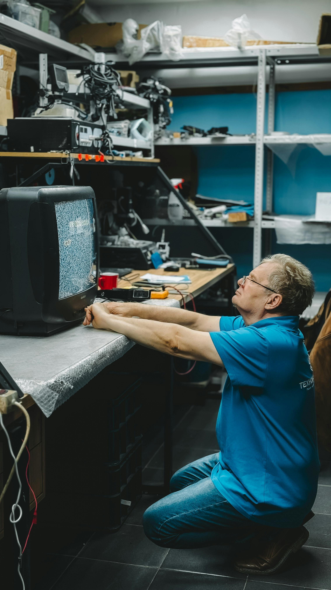
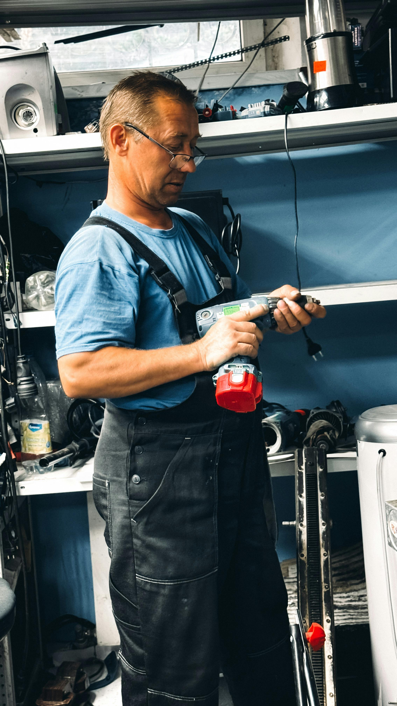
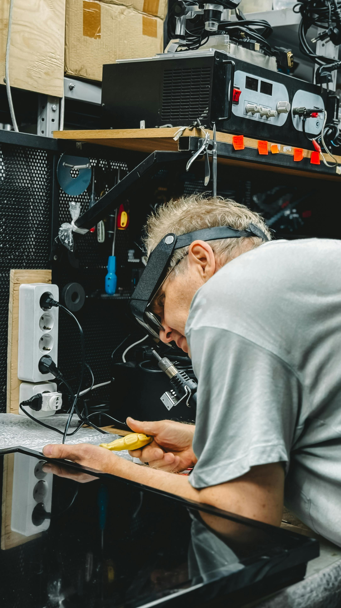
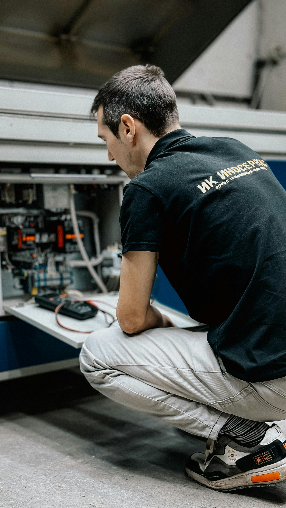
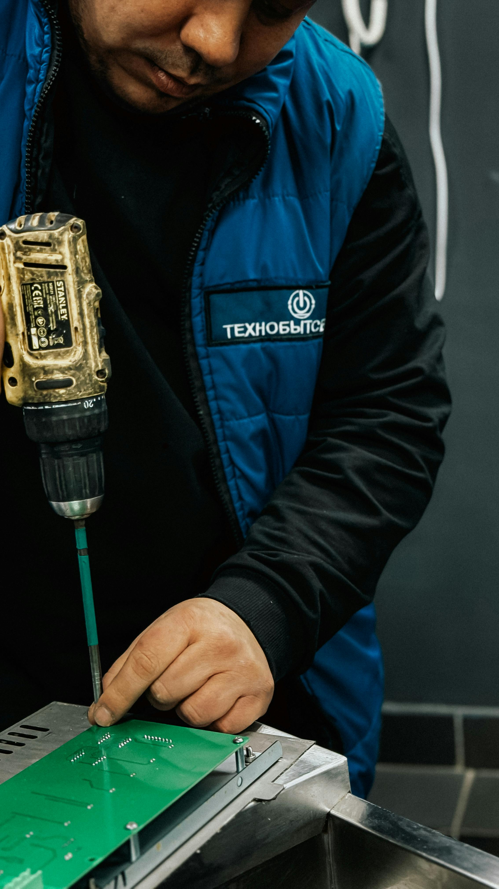

Tradycja w montażu, precyzja w detalu. Rodzinne rzemiosło instalacji gazowych na bezkompromisowym poziomie.
Nie jesteśmy kolejną bezosobową korporacją. Jesteśmy rodziną, która od pokoleń dba o bezpieczeństwo i ciepło w domach naszych klientów. Znamy każdą rurkę, każdy zawór i każdy, najdrobniejszy przepis prawny.
Nasza wiedza to nie tylko wyuczone procedury – to dziesiątki tysięcy godzin spędzonych z kluczem w ręku w kotłowniach, domach i obiektach przemysłowych. Podchodzimy do Twojej instalacji z pedantyczną dokładnością, montując ją dokładnie tak, jak zrobilibyśmy to u siebie. Bo zaufania w naszej branży nie buduje się słowami, a szczelnością każdej wykonanej spoiny.
Tam, gdzie inni widzą problem, my widzimy gotowe rozwiązanie. Zobacz efekty naszej pracy.




